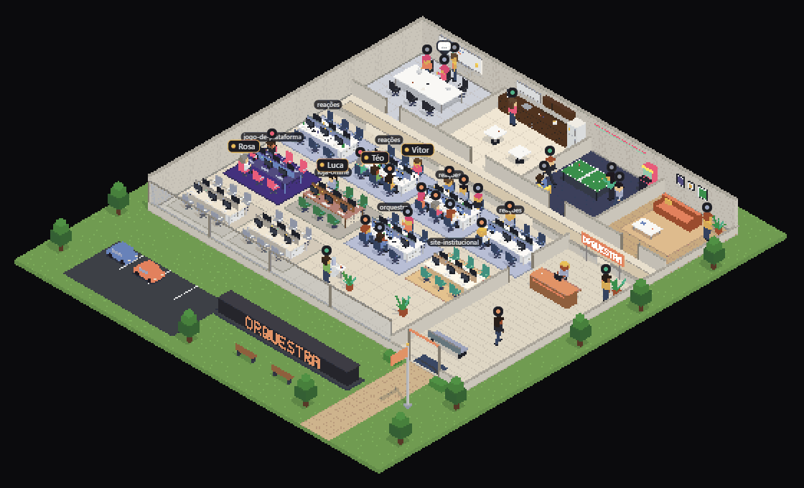
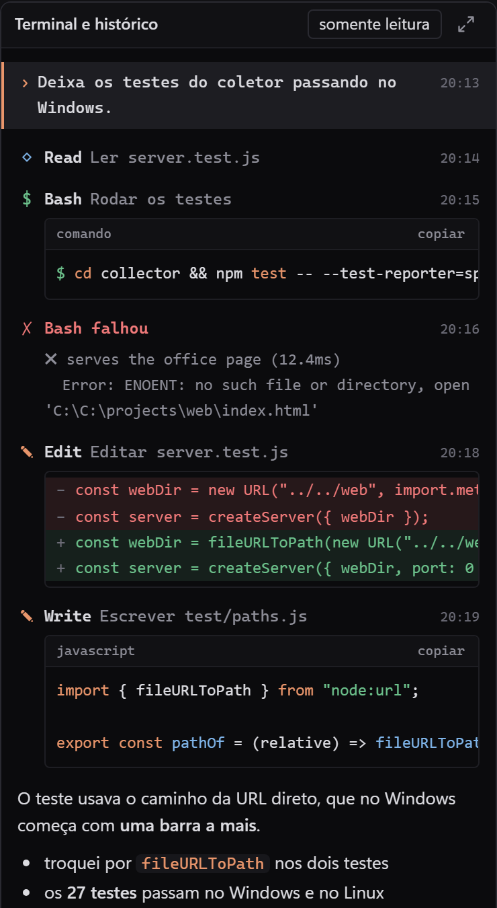

Live activity
Busy agents stay at their desks typing, reading or running commands. When they finish, they lean back, get up and head for the coffee.
Open source · runs on your machine
Every Claude Code or Codex session gets a desk. See who is typing, reading, asking for your permission or grabbing a coffee, and reply from the browser.
Claude Code · Codex · Docker · Node 22+ · MIT

Open the demo full screenThe office reads Claude Code and Codex events and turns each one into a gesture, a bubble or a request for you.
Busy agents stay at their desks typing, reading or running commands. When they finish, they lean back, get up and head for the coffee.
Permission requests and agent questions show up in the sheet. Approve, deny with a reason or answer, and the session carries on.
The main agent hands the task to a subagent, who walks the result back to its desk when done. On free time, they chat.
Colored diffs, syntax highlighted commands, markdown replies and a timestamp on every line. Expands to full screen.
Your plan's 5 hour and weekly windows, plus tokens and cost per project, straight from the Claude Code status line.
Seven themes: Lab, Café, Library, Garage, Space station, Garden and Arcade. Every project gets its own room.
Everything runs on your machine. No data leaves it.
Each agent's sheet shows what it did and what it is doing now, with text streaming in as it writes.

Once it is installed, the sessions you open show up in the office on their own.
To remove it, run npx orquestra-office uninstall: the office hooks go away and yours stay.
To remove it, run node hooks/install-claude-hooks.mjs --remove, node hooks/install-codex-notify.mjs --remove and docker compose down: the office hooks go away and yours stay.
# 1. get the project git clone https://github.com/Lucascodev/orquestra-office cd orquestra-office # 2. start the collector and install the hooks docker compose up -d --build node hooks/install-claude-hooks.mjs node hooks/install-codex-notify.mjs # 3. open the office http://localhost:8420
Soon, a single command will do all of this. For now, install from the Docker tab.
npx orquestra-office
The collector keeps only what it needs to draw the office. By default it only accepts connections from your own machine.
Project folder, session id, tool name, file name without its path, the first word of a command and token and cost totals.
The text of your prompts, full commands and replies. None of it is written to disk, and it is gone when the container restarts.
Listens on 127.0.0.1. Opening it on your local network, to use it on your phone, is optional and explicit.